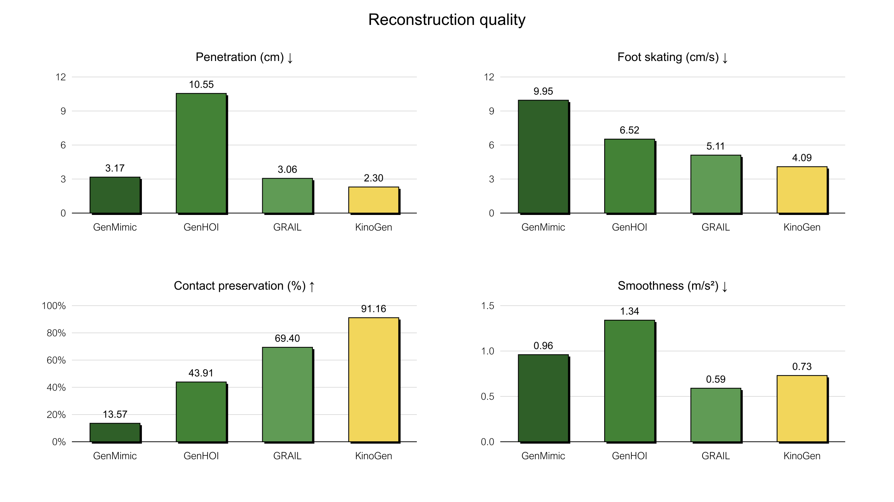
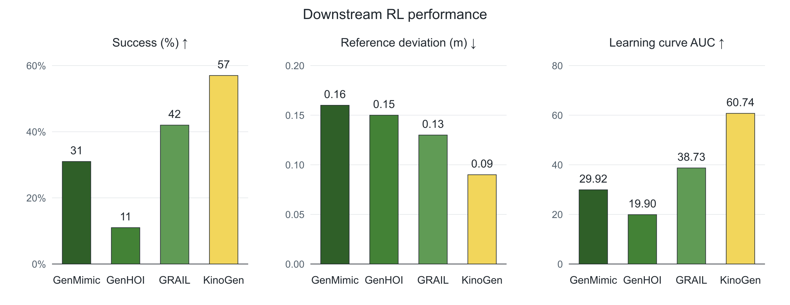

Generated multi-view video
Two synchronized views depict the prompted interaction.
We present KinoGen, a framework that synthesizes customizable humanoid loco-manipulation references through kinematically grounded video generation. KinoGen conditions a pretrained video generator on calibrated renders of the target robot and object, then fits the same models to the generated two-view video. The resulting reference lies in the robot configuration space without a human body proxy or retargeting. Users can prescribe a goal object pose, regenerate the motion around an edited keyframe, and recover a reference that satisfies that pose exactly. Across eight tasks, KinoGen reduces penetration and foot skating, preserves over 90% of annotated contacts, and supports tracking-policy deployment on a Unitree G1 with dexterous hands.
KinoGen synthesizes customizable whole-body, hand, and object motion references for a target humanoid and its scene. Generated videos depict the desired interaction but do not directly provide the 3D trajectories required for tracking or guarantee a prescribed object pose. KinoGen addresses these requirements by coupling video generation with simulator rendering and reconstruction through three key design choices:
Our key insight is that a pretrained video generator and a physics simulator can be coupled through rendering and reconstruction using the same robot and object models. The paired videos illustrate the reconstruction side of this coupling, showing the generated interaction alongside its recovered robot–object reference.
Two synchronized views depict the prompted interaction.
KinoGen recovers the corresponding body, hand, and object trajectories in simulator coordinates.
Qualitative references at 1× speed span lifting, placement, sitting, and other environmental interaction. These examples show the diversity and quality of the generated motion references.
Tracking policies trained on KinoGen references execute diverse whole-body tasks on a Unitree G1 equipped with dexterous hands. Videos are shown at 1× speed. The deployments demonstrate that the generated references support hardware policy learning across whole-body lifting, placement, sitting, and environmental interaction.
All methods reconstruct the same generated interaction. KinoGen preserves a plausible grasp and ground contact, while the comparison methods exhibit penetration or floating artifacts. This yields a more physically coherent reference for downstream control.
A user edits the desired bottle pose. KinoGen regenerates the surrounding motion and reconstructs it with the edited state as a hard constraint, using the video model as a behavior-aware interpolator. KinoGen reaches the prescribed targets exactly while producing substantially less penetration than direct interpolation.
KinoGen achieves the best penetration, foot-skating, contact-preservation, and downstream RL performance among the video-based reference pipelines evaluated in the paper.

